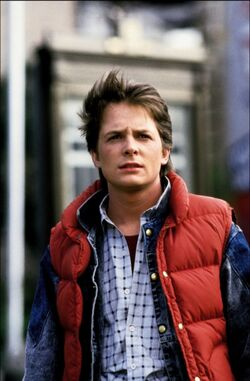
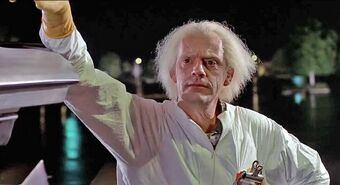
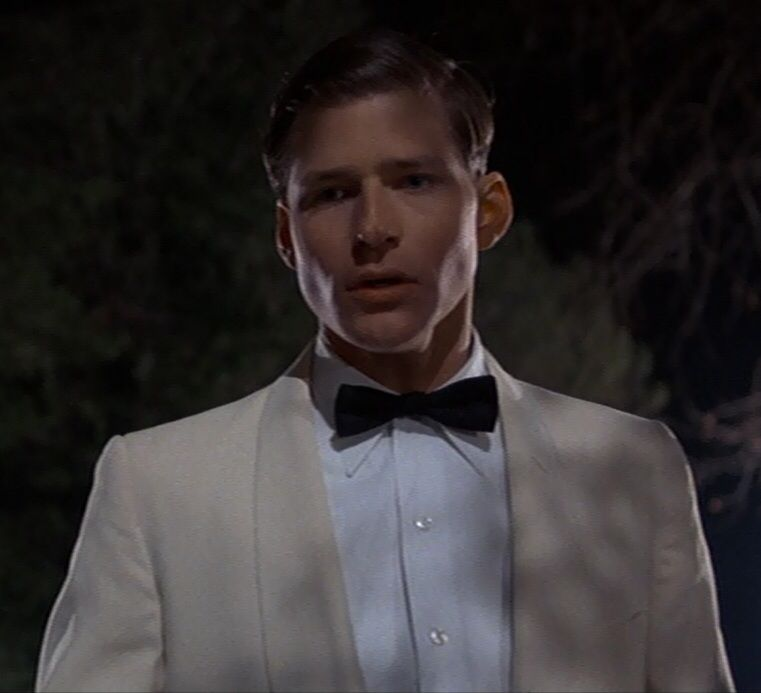
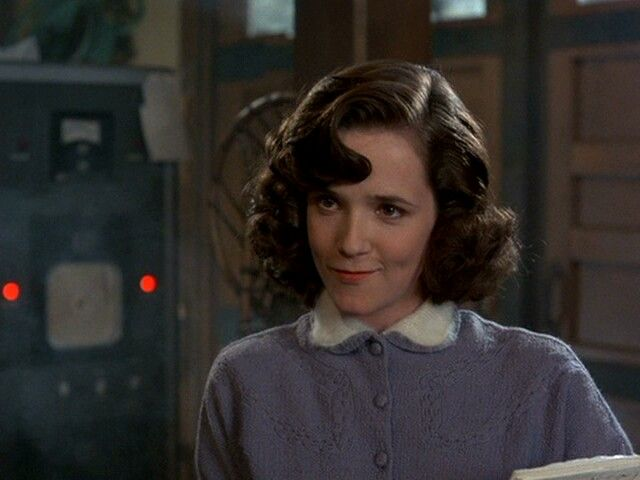
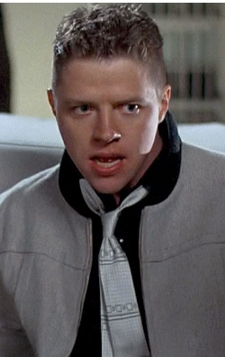

Michael J. Fox como Marty McFly: el protagonista de la película. El actor fue la primera opción para interpretar al joven viajero en el tiempo, sin embargo Fox estaba comprometido en ese instante con la teleserie Family Ties. Las siguientes opciones de Zemeckis eran los actores C. Thomas Howell y Eric Stoltz, respectivamente. Este último había impresionado a los productores con su participación como Roy L. Dennis en Mask —la cual aún no se había estrenado— por lo que fue contratado para asumir el papel de Marty. No obstante, en plena etapa de rodaje, los directores despidieron a Stoltz al sentir que no era adecuado para el papel. Por otra parte, Fox finalmente estuvo disponible para grabar el filme una vez que Stoltz se lo permitiera, bajo algunas condiciones (véase la sección Rodaje para más información). Una vez que el actor leyó el guion, quedó fascinado con la trama y se mostró impresionado por la sensibilidad de Zemeckis y Gale al despedir a Stoltz, pues a pesar de todo «hablaban muy bien de él». Otras celebridades consideradas para el rol fueron el cantante canadiense Corey Hart —a quien los cineastas invitaron a realizar una sesión de prueba; sin embargo este rechazó la propuesta—, y los actores C. Thomas Howell y Ralph Macchio —quien creyó que la película trataba sólo sobre «un joven, un automóvil y cápsulas de plutonio»—. Adicionalmente, Johnny Depp y John Cusack realizaron una prueba de casting para este rol.
Christopher Lloyd como Emmett «Doc» Brown: el científico que logra establecer los viajes en el tiempo y mejor amigo de Marty McFly. Lloyd fue elegido después de que la primera opción de los directores, John Lithgow, no estuviera disponible. Igualmente, el actor Jeff Goldblum fue considerado para el rol. Tras trabajar con el actor en la película Las aventuras de Buckaroo Banzai (1984), el productor Neil Canton sugirió que Lloyd era una opción adecuada para el rol. En un principio, Lloyd rechazó el papel, pero cambió de parecer una vez que leyó el guion, además de la persistencia de su esposa para que actuase en la película. Durante el rodaje, Lloyd improvisó algunas escenas, inspirándose primordialmente en el científico Albert Einstein y el compositor Leopold Stokowski. Como detalle adicional, Brown pronuncia la palabra «gigawatts» como «jigowatts», ya que ésta era la forma en la que un físico pronunció dicha palabra durante una reunión que tuvo con Zemeckis y Gale, al momento de revisar el guion.
Crispin Glover como George McFly: padre de Marty y esposo de Lorraine. Zemeckis le dijo a Glover que improvisara varios de los gestos nerds de George, así como sus manos temblorosas. El director bromeaba con frecuencia al respecto al decir: «tuve que hacerlo entrar en razón en incontables ocasiones pues Crispin estaba inmerso en un 50% de las veces en su interpretación del personaje». A pesar de haber interpretado al padre de Marty, en la vida real, Glover es casi tres años más joven que Fox.
Lea Thompson como Lorraine Baines: madre de Marty y esposa de George. Thompson fue elegida debido a que había protagonizado junto con Stoltz la película The Wild Life. El maquillaje que utiliza durante las primeras escenas del filme, durante 1985, tomó cerca de tres horas y media para hacerla ver como si tuviera 47 años de edad, cuando en ese entonces tenía 23. De manera similar al caso de Glover, a pesar de haber interpretado a la madre de Marty, Thompson nació en el mismo año que Fox pues el actor es mayor que ella, por tan sólo diez días.
Thomas F. Wilson como Biff Tannen: el antagonista central de la película y bravucón de la escuela a la que asiste George. Wilson fue considerado debido a que la opción inicial, J. J. Cohen, no era muy convincente al interpretar el papel del bravucón al que se enfrentaría Stoltz. Cohen fue recontratado para formar parte como uno de los esbirros de la pandilla de Biff. En caso de que Fox hubiese sido contratado desde un inicio, probablemente Cohen hubiese resultado elegido para el papel, pues tenía la ventaja de que era mucho más alto que Fox, un contraste que ayudaría a hacer más convincente la inferioridad de Marty respecto a Biff.
